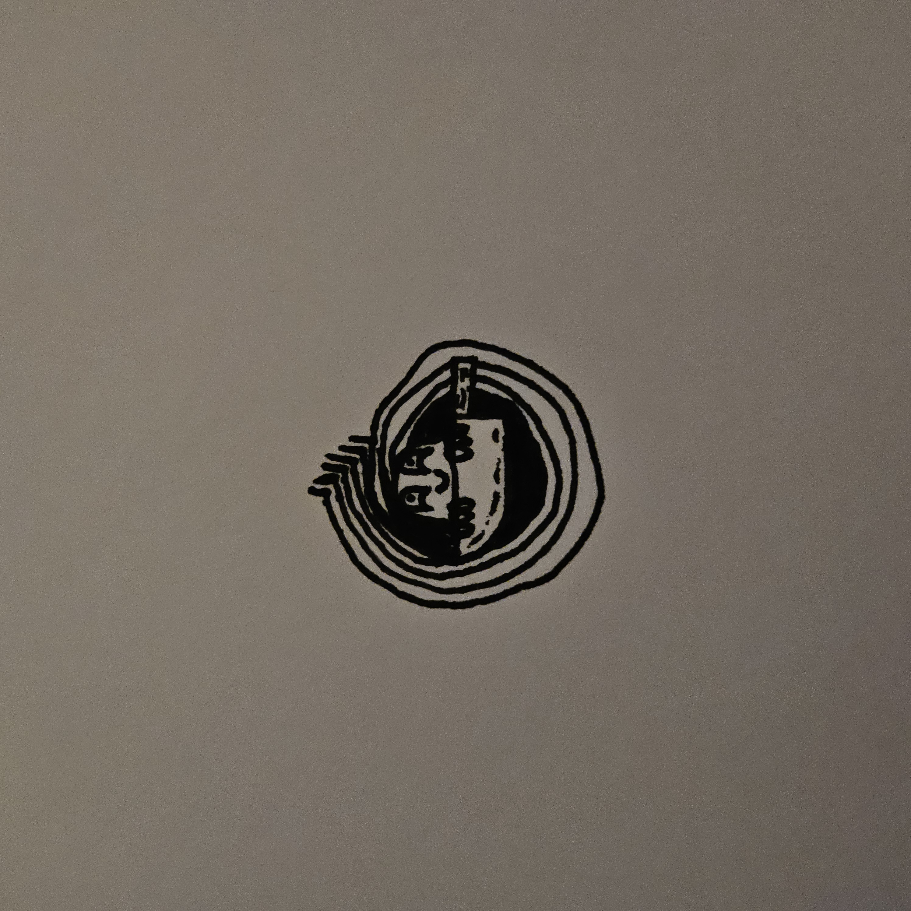

March 20, 2024 @ 8:17 PM
I've been playing a lot of Minecraft recently, and am wondering what to build next. Maybe I'll build a castle? Who knowz :P
March 20, 2024 @ 12:30 AM

A cute and funny doodle I drew!
March 19, 2024 @ 12:44 AM
Sorry I haven't posted in a while, I've been busy. More posts to come, tho!
Feb. 26, 2024 @ 2:32 AM

Watched Last Voyage of the Demeter and WOW, what a great horror movie! After seeing it, I decided
to draw Dracula :P
Feb. 25, 2024 @ 12:23 AM
Gonna get a portable CD player. Tired of ripping music.
Edit: changed my mind lul